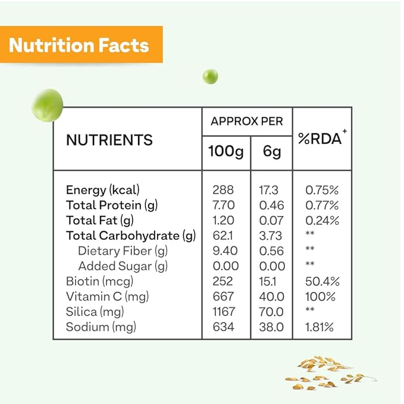

1- NON-GMO Super Daily Protien Tablets Best For Adult Men Women Seniors With 42 Natural Fruits Vegetables Blend, 21 Essential Vitamins Minerals. 90 Tablets. Vegan Coating Made in USA
Oziva aims at solving the basic challenge of lack of proper nutrition. To tackle an unhealthy lifestyle and dietary habits, Oziva brings to you tailored natural solutions to simplify healthy living while helping you reach your health goals.
About this item:-
1.❤ OZ30G PLANT PROTEIN PER SERVING FOR EVERYDAY FITNESS: OZiva Organic Plant Protein packs 30g complete plant protein, 5.3 BCAAs promotes everyday fitness and active nutrition for men and women. It combines the powder of Organic Pea Protein Isolate, Organic Brown Rice Protein and Organic Quinoa. ❤
2. ❤ COMPLETE BCAA PROFILE FOR DAILY PROTEIN REQUIREMENTS: All 9 essential amino acids to help meet the daily protein requirement of the body, especially for vegans and vegetarians. This leads to better metabolism, making it easier to build lean muscle, and burn fat.❤
3. ❤ FOR ENHANCED IMMUNITY: A plant-based alternative to whey protein. OZiva Organic Plant Protein helps boost immunity and aids in faster recovery of the body after illness by helping to strengthen the bod❤
4. ❤ FOR ENHANCED IMMUNITY: A plant-based alternative to whey protein. OZiva Organic Plant Protein helps boost immunity and aids in faster recovery of the body after illness by helping to strengthen the bod.❤
_______________________________________________________________________________________________________________________________________________________
Click here to buy :-

5 Benefits of Taking Protien Daily
1.FOR ENHANCED IMMUNITY: A plant-based alternative to whey protein. OZiva Organic Plant Protein helps boost immunity and aids in faster recovery of the body after illness by helping to strengthen the body
2. Improved mood. ...
3. Reduces stress and anxiety. ...
4. Improved short-term memory. ...
5. Maintained muscle strength.
Important information...
Safety Information
ALLERGEN WARNING: CONTAINS SOY (LECITHIN), MILK (TRYPSIN), AND FISH. CAUTION: This product is manufactured and packaged in a facility which may also process milk, soy, wheat, egg, peanuts, tree nuts, fish and crustacean shellfish. KEEP OUT OF THE REACH OF CHILDREN. DO NOT USE IF SAFETY SEAL IS DAMAGED OR MISSING. STORE IN A COOL, DRY PLACE.
Ingredients
Pea protein Isolate, Brown Rice Protein & Quinoa .
SUGGESTED USE: 1 tablet taken 1 to 3 times daily preferably with meals or as directed by a healthcare professional.
Legal Disclaimer
Statements regarding dietary supplements have not been evaluated by the FDA and are not intended to diagnose, treat, cure, or prevent any disease or health condition.